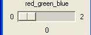

Using the program
Using the programThe CISMM Video Optimizer program is used to optimize video frames from a Microsoft DirectShow-compatible video file, from a Microsoft DirectShow-compatible camera, from a Roper Scientific camera, from a DiagInc SPOT camera, or from a set of TIFF or BMP files (it can read other, compressed file formats but these are not included in the default set because these file formats distort images in ways that affect tracking accuracy). The program currently runs only on Windows, but it uses the portable openGL library for rendering, the portable Tcl/Tk for user interface control, and the portable ImageMagick package for reading images.
The first (so far the only) function of the program is to remove shifts between frames in the images. It provides one or two optimizable fiducial marks that can be placed on the same image feature in each frame of the video. The video is resampled to keep these points stable in the output log, which is a set of TIFF files that have the video stabilized.
Planned features include setting a subregion of the video to store, contrast/gain adjustment, and removal of imaging artifacts.
The program is run by dragging a video file or image file onto the desktop icon that was created when the program was installed. To select a stack of image files that are numbered consecutively, drag any one of the files onto the icon. It can also be run by selecting one of the camera-specific shortcuts from Start Menu/All Programs/NSRG/CISMM Video Optimizer v01.02. If you run the program directly by double-clicking on the icon, it will ask for a video or image file (AVI, TIF, or BMP) that it should open.
Using the programWhen the program is run and a file is selected, four windows will appear. The image window that appears on the lower right contains the first image within the video file or a continually-updating image from a live camera feed. The control panel named tk that appears on the left when the program is run (shown here to the right) contains a number of interaction widgets that control the operation of the program. The kernel control panel that appears above the image window (described later) controls the type of tracking kernel being used. The log control panel is described later.
If the video file (or video camera) contains different data sets in the red, green, and blue channels then you will need to select the one you want to view. By default, the red channel (channel 0) is selected. To select a different channel, click on the "0" beneath the red_green_blue slider and type its number into the dialog box that appears. Enter 1 for green and 2 for blue. The video window should change to display the selected channel.
A bit is a computer term for an entity that can take on two values, stored as zero and one. Using several bits in parallel enables the encoding of integers: binary notations is like decimal notation but each digit can only have the value zero or one before wrapping around. Counting proceeds as follows: 000, 001, 010, 011, 100 corresponds to decimal 0,1,2,3,4. Stacking 8 bits together (a bit depth of 8) covers the range 0-255. Stacking 12 bits covers the range 0-4095. The default bit depth in CISMM Video Optimizer is 8 bits per pixel. This is correct for AVI files and many common file formats. Most scientific cameras, however, operate at 12 bits per pixel. When such an image is loaded into CISMM Video Optimizer, it produces a strange-looking image with dark spots where there should be bright spots, or bands of dark and light. While this will not interfere with the tracking (it is only a problem of mapping 12 bits of color to 8 bits of displayable color on the screen), it looks unappealing. By adjusting the bit depth to exceed the number of bits that are used in the image, these colors can be brought into range. If you load a 16-bit image, this can be handled by clicking on the number below the slider and typing in 16; even though it exceeds the maximum slider value, it can be set in this manner. To repeat, this setting has no effect on tracking, only on the images shown on the screen.
By default, the CISMM Video Optimizer only applies a translation to successive frames in the image and only provides one fiducial mark, which follows a point on the images that is to remain fixed in the output video.
If either or both of the reorient and rescale check-boxes in the Tcl menu are checked, a second fiducial mark appears. This mark is to be placed on a second point in each image that is to be kept at the same relative location compared to the (moving) first point. If reorient is selected, the images are rotated in-plane so that it points in always lies in the same direction from the first fiducial. If rescale is selected, the images are uniformly scaled so that it always lies at the same distance from the (moving) first point.
To select the fiducial feature in the first image, click on its center with the left mouse button. A red plus sign will move to the location you have selected. If you want to adjust its radius, click on the number beneath the radius slider within the kernel control panel and enter it into the dialog box that appears or by move the radius slider. When there are two fiducials shown, the nearest one will move to the location where the mouse button is pressed.
Note that when optimization is turned on, the tracker will always jump to the optimum location nearest the current location of the mouse cursor.
If you prefer to not have the centers of the tracked objects obscured by the tracking markers, select the round_cursor checkbox from the tk control panel. This will replace the plus signs with a circle around the center at twice the radius that the kernel is set to use.
There are three types of tracking kernels available in version 1.02, disc, cone, and symmetric. Their properties are controlled using interface widgets in the kernel control panel.
For tracking spots that are even in intensity, or which have uneven intensities within them but a defined circular edge, the disc kernel should be used. The radius should be set to match the radius of the spots you wish to track. The interpolate checkbox should be set for more accuracy and cleared for more speed.
For tracking spots that are brighter in the center and drop off to dim (or darkest in the center and ramp up to bright), the cone kernel should be used. For cone tracking, the radius should be set about 1/3 larger than the spots you want to track (giving the kernel a good sampling of the background as well as the spot). The setting of the interpolate check box does not matter for the cone tracker (this tracker always interpolates).
A parameter relevant for both the disc and cone kernel is whether the spots are dark points in a lighter background (the default) or lighter points in a dark background). This is controlled using the dark_spot check box located at the top of the user interface. You should set this for the type of spot you are seeking.
If the bead profile is changing over time, or if it does not fit well into one of the above categories, then the symmetric tracker should be chosen. This tracker operates by locating the minimum variance in concentric rings around the bead center. It sums the variance in circles of radius 1, 2, 3, ... up to the radius setting and divides each circle's radius by its circumference to provide even weights for each ring. The radius should be set to be at least slighly larger than the bead that is to be tracked; setting it larger will not harm tracking except to make the program run more slowly. The setting on the dark_spot check box has no effect when symmetric tracker is chosen.
The follow_jumps check-box activates a more-robust tracking algorithm that first looks for the best image match within 2 radiii of the prior position and then performs the standard kernel match. This makes the tracking run more slowly, but is more robust to bead motion between frames. It does not affect the accuracy or the style of the main optimization for the kernel, it is only used to initialize the new search location between frames.
Once you have selected the type of tracker to use, and have selected the fiducial track, you can check the optimize checkbox. When you do this, the fiducial will move to the centers of the spots it was started on. You do not have to turn on this optimization for the offset to work; if you select a fiducial that is not a spot, you should not turn it on. You should then move the fiducial mark to its new location after single-stepping through each video frame.
The location of the fiducial mark is shown in the x, y, and radius displays in the kernel window. Note that these may show subpixel positions and radii. You can control the minimum step size that the optimizer will use by adjusting the precision slider within the tk control panel. Smaller values make the program run more slowly but will result in the program attempting to find the position with greater precision (this will not necessarily correspond to greater accuracy, due to noise and possibly aliasing).
 You can record the
motion of the trackers by checking the Logging checkbox within
the log control panel (shown to the right). This will bring up
a dialog box that will let you select a filename. Once you have selected a file
name, you check the play_video checkbox to begin going through
the video file, or you can use the single_step_video repeatedly
to step through a frame at a time. When you are finished with the section of
tracking that you are interested in, uncheck the Logging checkbox to stop the
logging. You can then go forward to another section, turn on logging, and save
a different file sequence if you like. The files that are stored will have the
format: filename.opt.nnnn.tif, where filename is the name
selected above, and nnnn is replaced by the frame number from the video (starts
at frame 0 and goes up by one for each single_step).
You can record the
motion of the trackers by checking the Logging checkbox within
the log control panel (shown to the right). This will bring up
a dialog box that will let you select a filename. Once you have selected a file
name, you check the play_video checkbox to begin going through
the video file, or you can use the single_step_video repeatedly
to step through a frame at a time. When you are finished with the section of
tracking that you are interested in, uncheck the Logging checkbox to stop the
logging. You can then go forward to another section, turn on logging, and save
a different file sequence if you like. The files that are stored will have the
format: filename.opt.nnnn.tif, where filename is the name
selected above, and nnnn is replaced by the frame number from the video (starts
at frame 0 and goes up by one for each single_step).
Logging will not occur while the file is paused, or when the end of the video has been reached (the last frame is stored either when you quit the program or when you stop logging). This is done so that you can place the trackers back onto spots that have jumped too far between frames when single-stepping through the video and still get an accurate record of where the spots went. There will be one file per frame of video stepped through or played through. Note: Some video files have a 30 frame/second playback but have three copies of the same video frame to produce an overall update of 10 frames/second; this will produce repeated location reports for each of the identical frames.
Whether logging is turned on or not (for previewing to see how well the fiducial mark tracks, for instance), the video can be played by checking the play_video checkbox, and paused by unchecking it. The single_step_video checkbox will step forwards one video frame each time it is pressed. The rewind checkbox causes the video to rewind to the beginning, play the first frame of the video, and then pause. The FrameNum display shows which frame of a video file is currently being displayed.
This program is brought to you courtesy of the National Institutes of Health National Institute for Biomedical Imaging and Bioengineering through its National Research Resource in Computer-Integrated Systems for Microscopy and Manipulation at the University of North Carolina at Chapel Hill.
An installer for the program and manual can be downloaded from the CISMM software download page. To run it, you must also download and install version 01.05 or higher of the NSRG Runtime package, which is also available on that page. It also requires Microsoft Direct X version 9.0a or higher. If you want to open sets of TIFF files or other image file sets, you also need the 16-bit version of ImageMagick version 5.5.7. These packages can be installed in any order. The ImageMagick installer is included as part of the CISMM Video Optimizer installer.